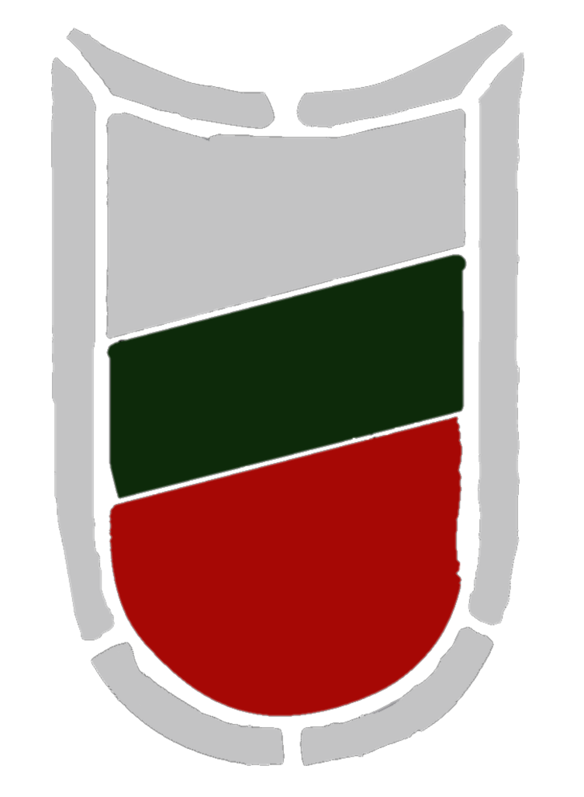
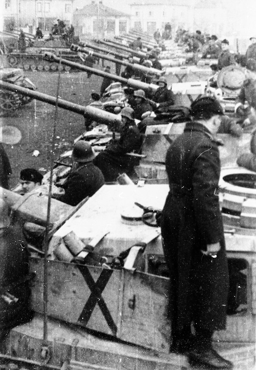
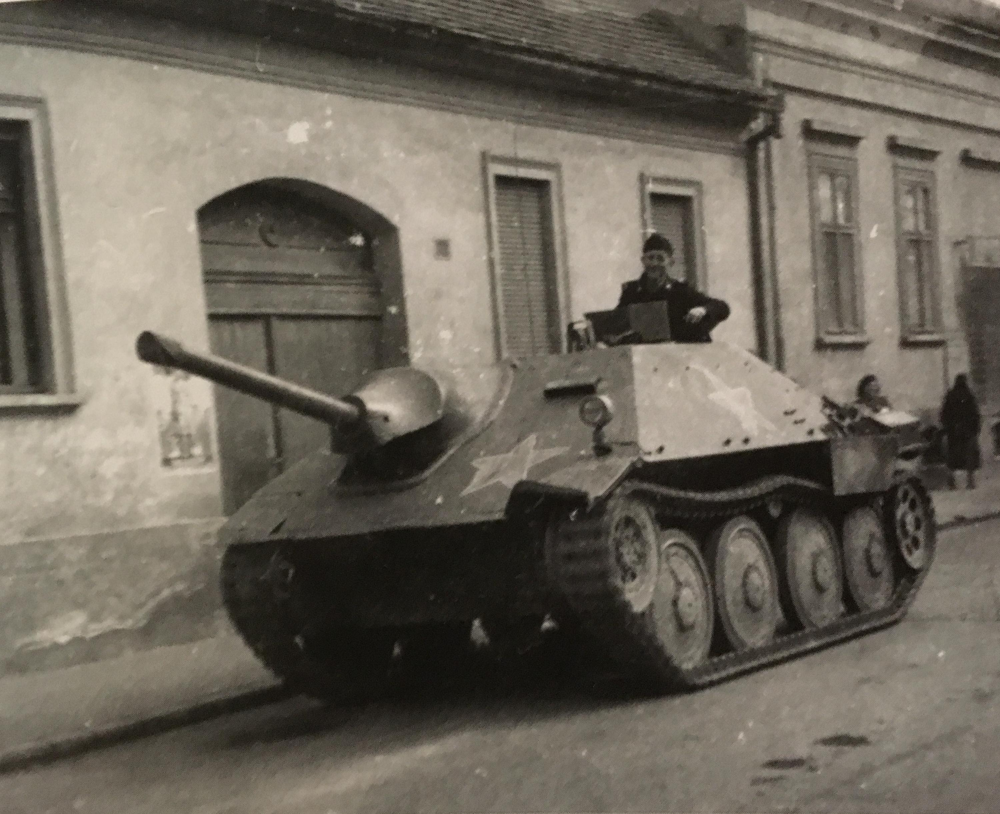
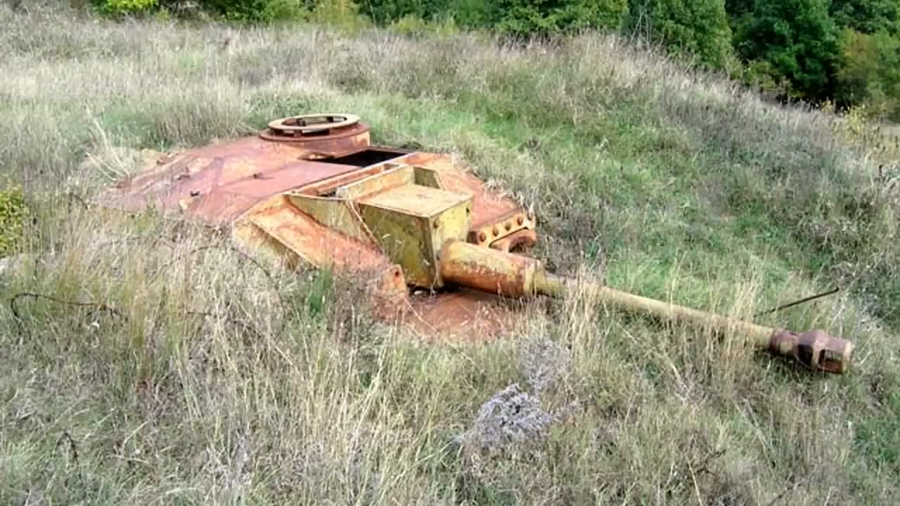

Бронираната бригада
Сформирана е през 1943 г., пряк наследник на „Бронирания полк“ създаден през 1941 г., но нека започнем историята от самото начало. През април 1941 г. бронираната дружина ( създадена през 1939 година, като наследник на танковата рота от 1935 г. ), провежда съвместни учения заедно с 16-а бронирана дивизия на Вермахта край Пазарджик, на които присъства и цар Борис III. Той е впечатлен от показаното и дава указания за формиране на по-голямо бронирано формирование.
През 1942 г. командването на армията прави извод, че наличната бойна техника е остаряла и ненадеждна, неспособна да подкрепя дори отбранителни операции. В края на годината се взема решение да бъдат създадени танкови бригади, които и като структура, и като бойна техника да бъдат по образец на германска танкова дивизия. За основен танк е избран германският Panzerkampfwagen IV. Предвижда се и създаването на щурмови артилерийски отделения за борба с противниковите танкове. За целта е избран германският StuG 40.
Исканията са приети и германската страна съставя план за доставки „Барбара“, включващ „План 43“ и „План 44“, като до юли 1943 г. на България трябва да бъде доставена техника за окомплектоването на една танкова бригада
Първите танкове по тази програма са доставени през май 1943 г. Германската страна обаче променя типа на някои от договорените учебно-бойни машини. Доставени са чехословашки и френски танкове на мястото на някои от заявените типове. Въпреки нежеланието на българската страна да използва ненадеждните френски машини, по-късно те са зачислени.
В крайна сметка се доставят и заветните танкове Panzer IV, те са от новите модификации –“G” и “H”, с по-мощното дълго 75-mm оръдие KwK 40/ L48. Фабрично танковете са боядисани с тъмножълт цвят – Dunkelgelb или RAL 7028, зачислени са като „Майбах T-IV“. Доставените Sturmgeschütz 40, са въоражени със същото 75-мм оръдие и са боядисани отново в тъмножълт цвят, зачислени в армията като „Майбах“ Т-III. Новопостъпилата модерна техника дава възможност бронираният полк да бъде разгърнат в бронирана бригада. Това става на 1 октомври 1943 г. със заповед №375/29.IX.1943 г.
Структурата на бронираната бригада включва:
- бригаден щаб
- брониран полк с командир подполковник Марин Цветков Диков
- моторизиран полк с командир подполковник Васил Иванов Мутафов
- артилерийски полк с командир подполковник Иван Петров Иванов
- бронирана разузнавателна дружина
- пионерна рота
- свързочна рота

До есента на 1944 г. танковете на Бронираната бригада не участват в бойни действия. След преврата на 9 септември 1944 г. България заявява, че се присъединява към антихитлеристката коалиция и започва бойни действия срещу нея. Като опознавателен знак на българските танкове е въведен черен „Андреевски кръст“, изрисуван направо върху корпуса или в бял квадрат, по-късно е заменен от белият щит с българския трикольор. Колоната танкове преминава през София. Част от нея остава да брани столицата, докато на останалата е заповядано да се подготви за бойни действия срещу германците.
Бригадата получава заповед да атакува противника по направление Пирот – Бела паланка. На 17 септември край Пирот при засада едно 88-mm немско зенитно оръдие унищожава колона от 10 български танка, като загиват 41 танкисти. След този бой Бронираната бригада е изтеглена в резерв на 1-ви корпус, който на 23 септември е реформиран във 2-ра армия. На 10 октомври танковете атакуват противника в района на Власотинци съвместно с части от 12-а пехотна дивизия и до края на деня овладяват града. В периода 14 – 18 октомври танковете водят тежки боеве в района на Ниш, Прокупле и Куршумлия. В резултат на Нишката операция е унищожена изтеглящата се колона на 7-а SS доброволческа планинска дивизия „Принц Ойген“. След боевете при Вучи трън и Митровица на 25 ноември 1944 г. Бронираната бригада се изтегля към София и участва в тържественото посрещане на войските на 2 декември.
Щурмовите артилерийски отделения (ЩАО) също вземат участие в първия етап. 1-во ЩАО е придадено към Втора армия, а 2-ро ЩАО – към Първа армия.
1-во ЩАО участва в боевете за Бела паланка, Ниш, Подуево, Митровица, Вучи трън. В хода на бойните действия някои машини са обстреляни погрешка от съветската щурмова авиация. За времето на бойните действия безвъзвратно е изгубено само едно щурмово оръдие.
2-ро ЩАО атакува по направление Куманово – Крива паланка. Заедно с парашутната дружина една щурмова батарея участва в боевете за Стражин. Цялото ЩАО заедно с 6-и пехотен полк участва в боевете за Страцин. Безвъзвратните загуби на 2-ро ЩАО са 3 щурмови оръдия.
На 1 януари 1945 г. се създава Втора бронирана бригада, заедно с нея се сформира и управлението на Бронетанкови и механизирани войски. През януари 1945 г. танковете заемат позиция край град Печ. Дружината участва в отбранителните боеве при Дравасоболч и Драваполконя по време на Дравската операция. След тези боеве, където дружината търпи сериозни загуби, започва да пристига обещаната техника. За периода между 14 март и 13 април пристигат:
| Модел | Брой |
|---|---|
| Panzerkampfwagen IV | 1 |
| StuG 40 | 3 |
| StuH 42 | 1 |
| Jagdpanzer IV | 2 |
| Jagdpanzer 38 Hetzer | 4 |
| Semovente Da 42/37 | 1 |
| Turan | 1 |
| Panzerkampfwagen V | 15 (25) |
| T-34-85 | 65 |
Времето за обучение се оказва недостатъчно и част от тези танкове не влизат в реални бойни действия.


Двете танкови роти, въоръжени с „Майбах Т-IV“, участват през март и април в Мурската операция при превземането на отбранителната линия „Маргит“, където дружината губи 11 танка. На 15 април дружината заедно с 47-и пехотен полк и взвод от парашутната дружина водят бой за овладяване на с. Ястребци. Задачата е изпълнена с цената на още 5 повредени танка. През нощта са отбити три атаки на германската армия. Към обяд на 16 април дружината спира за почивка по пътя към Зашевац, когато е обстреляна внезапно с минометен огън. Загиват командирът на дружината майор Иван Гюмбабов и командирът на парашутната дружина майор Любомир Ноев. Командването на дружината е поето от капитан Васил Таралежков, командир на 1-во ЩАО. След тези боеве 1-ва армейска дружина е изтеглена в резерв на 3-ти корпус, за да може да се отремонтират повредените машини. Бойният път на бригадата завършва в гр. Надканижа. Между 18 и 28 май Първа българска армия се съсредоточава край град Катошвар в подготовка за завръщане в България. Част от българските танкове са изпратени за ремонт във Виена и се завръщат в България едва през август 1945 г.
След 1948 г. за основен боен танк е определен съветският Т-34-85 и танковете „Майбах Т-IV“ са свалени от въоръжение, но до средата на 50-години се използват за обучение на механик-водачи. След 1955 г. танковете, както и щурмовите оръдия, са вкопани като дълговременни-огневи съоръжения по границата с Турция като част от отбранителната линия „Крали Марко“. След 2007 г. повечето от танковете и щурмовите оръдия са извадени. Част от тях са претопени за скрап, друга отиват на търг за колекционери, а малка част са реставрирани и са изложени в музеи.